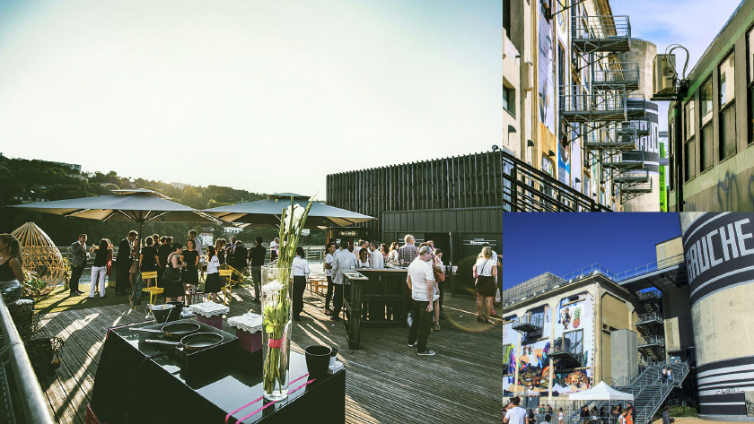

La Sucrière
Main conference venue
Our main venue is located on the southern side of Perrache station, where Rhône and Saône merge. You will join us at La Sucrière, an old sugar warehouse, the only building that was preserved when the area was entirely renewed in the 2000s as a place of experimentation for contemporary architecture.
La Sucrière is now a renowned exhibition space, the perfect nest for the famous Lyon Biennale of Contemporary Art, the Bakery World Championship ...and now Interaction 18.
You will walk through its historical spaces, with characteristic massive silos and a wooden rooftop, made even more peculiar by having its façade redesigned every two years: its look in 2018 will be a surprise.
Its wooden rooftop, hosting Le Sucre, a hip bar and a venue for famous DJs, will provide you a wonderful view of the rivers from its massive terrace.